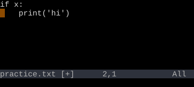

Indent and Auto-Indent
>> indents. << dedents. ={motion} re-indents using the language indenter.
>{motion} indents a range one shiftwidth. <{motion} dedents. ={motion} runs the language's indent function. Doubled forms (>>, <<, ==) act on the current line.
>, <, and = are all operators. They take a motion or text object, like d and y. >ip indents the inner paragraph. =a{ re-indents the brace block.
| Key | Note |
|---|---|
| > | |
| > |
| Key | Note |
|---|---|
| < | |
| < |
| Key | Note |
|---|---|
| > | |
| i | |
| p |
| Key | Note |
|---|---|
| = | |
| i | |
| p |
| Key | Note |
|---|---|
| = | |
| = |
Worked example — >> and <<
Indent and dedent the current line.

Doubled operator pattern. >ip indents an inner paragraph; >G indents to end of file.
See also: The Universal Grammar, The Vim Grammar